This work details the design, modeling, control synthesis and experimental validation of two generations of an autonomous differential‑drive robot that detects and centers on a standard 40 mm table tennis ball. A progression from open‑loop servo actuation with proportional / PI guidance to cascaded PI regulation with DC motors and encoder feedback shifts the dominant performance bottleneck from actuation to perception. Sub‑centimeter steady‑state accuracy (≤0.5–1 cm) is achieved on static and slowly rolling targets while maintaining robust stability margins.
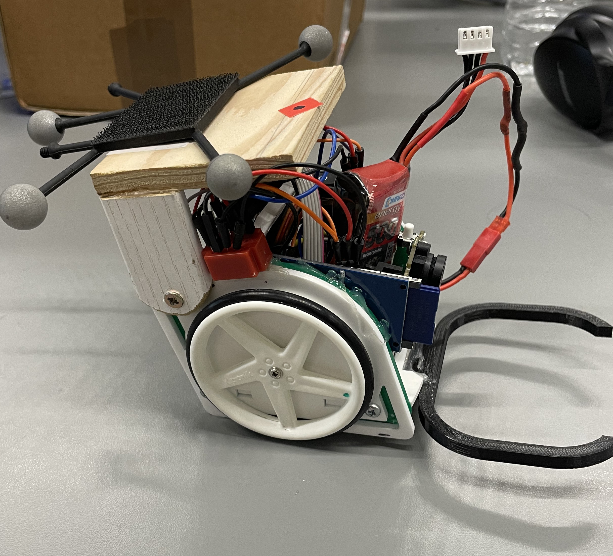
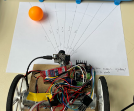
Collecting dispersed table tennis balls between multi‑ball drills breaks training flow. Goal: an autonomous ground robot that rapidly detects, approaches, and centers on a (static or slow rolling) ball, emphasizing accuracy (≤1 cm), speed, and stability (low oscillation).
Development loop: Theory ⇄ Simulation ⇄ Experiment ⇄ Gap analysis ⇄ Improvement.
Core challenge: Fast, precise, robust interception under variable lighting & friction, with constrained onboard compute.
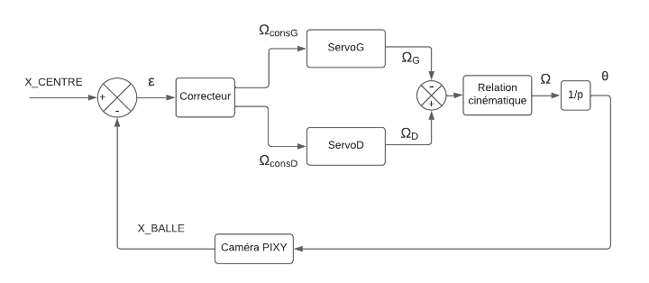
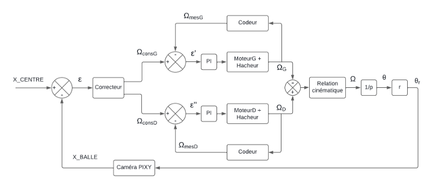
Figure insight (Fig.2–3) Prototype 1 applies the guidance law directly to servos with no wheel‑speed feedback → high sensitivity to servo asymmetry and battery voltage. Prototype 2 adds an inner PI speed loop (encoders) that linearises actuation so the guidance layer manipulates predictable differential speeds, reducing surface‑dependent response variance.
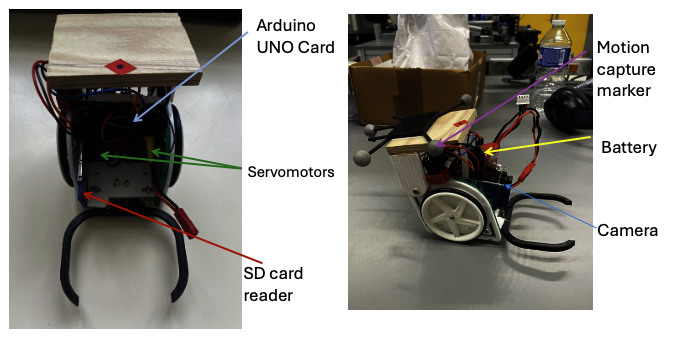
Processing chain: acquisition → HSV color mask → largest blob → centroid. Horizontal pixel offset becomes bearing error ε. Small‑angle approximation:
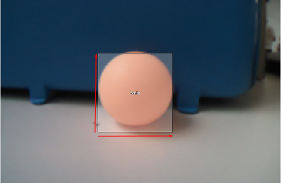
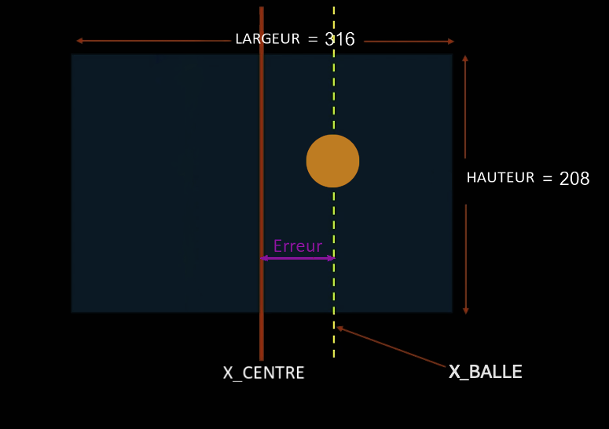
Figure insight (Fig.5–6) The vision pipeline keeps only one blob centroid (robust vs clutter). The small‑angle approximation (Eq.1) maps horizontal pixel offset to a near‑linear bearing error—adequate bandwidth without heavy intrinsic calibration at this stage.
Design choice: keep vision minimal (latency & tunability) before richer perception (depth, learning).
Differential drive (no‑slip, small heading error):
Used for preliminary gain sweeps (trajectory envelopes & steady‑state error sensitivity).
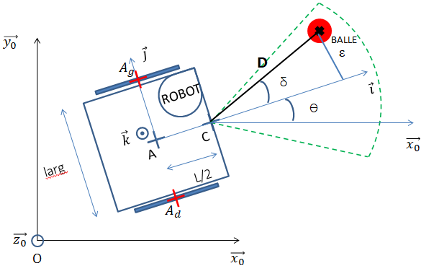
Wheel command laws:
Simulation looked stable → direct deployment.
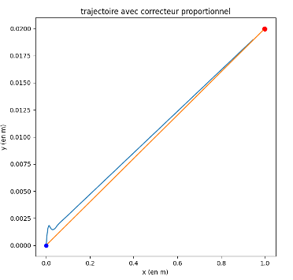
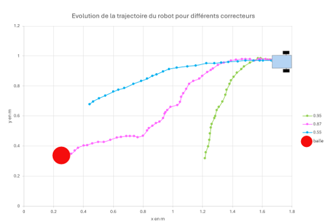
Figure insight (Fig.8–9) Sustained oscillation stems from left/right speed imbalance: the proportional correction repeatedly overshoots because the effective wheel gains differ, injecting a persistent bias. Remedy: add integral action (slow compensation) or redesign actuation.
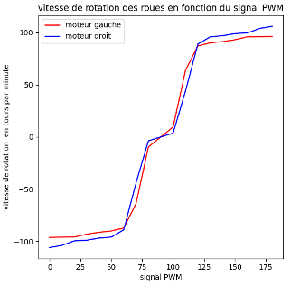
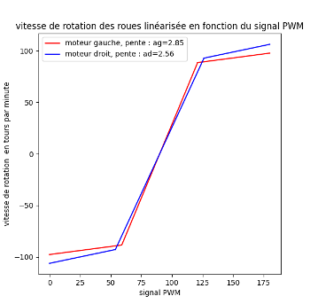
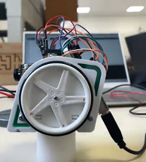
Figure insight (Fig.10–11) (10a) Empirical PWM→speed step responses show right servo higher effective gain (+12–15%) and a wider dead zone on the left. (10b) A simplified piecewise‑linear mapping substitutes the raw non‑linear curves inside simulation to preserve bias magnitude while enabling faster analytical gain sweeps. (11) Instrumented rig ensured repeatable capture of the asymmetric dynamics. This structural mismatch drives steady‑state offset under pure P; integral cancels it but increases time in saturation.
Clear unequal speed curves → biased steering & sustained oscillation. Hardware change justified.
PI guidance controller:
Integral removed residual error at cost of hitting servo speed ceiling.
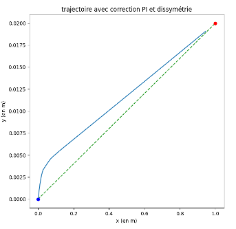
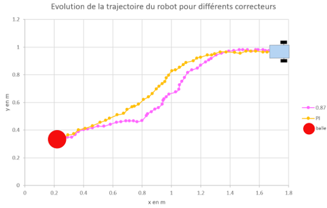
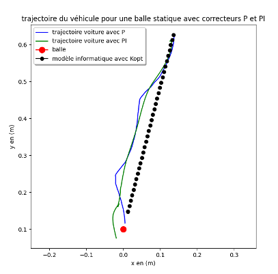
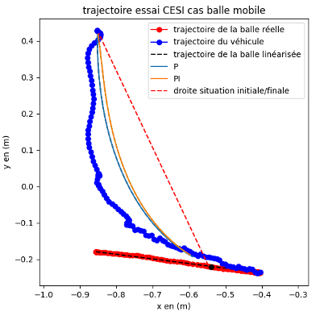
Figure insight (Fig.12–15) Integral action cancels bias but enlarges the initial saturation interval (command pinned at servo max), slightly extending capture time. The precision vs speed trade now hits the actuator physics ceiling, justifying the hardware redesign.
Findings: error ≤ 0.5 cm; performance now limited by servo saturation & mechanical asymmetry → redesign.
Address saturation, asymmetry, and limited camera performance. Shift to a cascaded architecture decoupling velocity regulation from outer guidance.
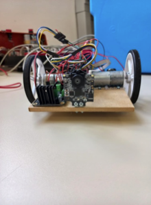
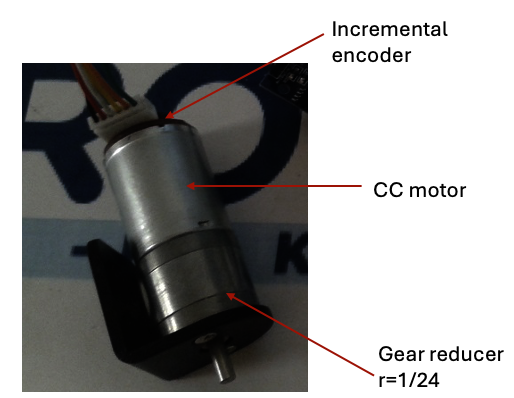
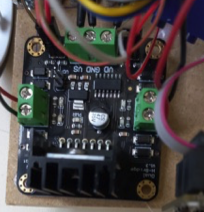
Result: guidance loop outputs target differential speeds instead of raw PWM → portability to battery & surface variation.
Step response identification → first order model:
Parameters via least squares fit.
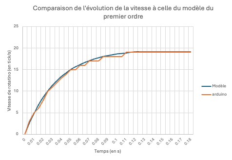
Figure insight (Fig.19) Residual error max < 5% over the operating band → first‑order model sufficient for the speed loop whose goal is mainly slow disturbance rejection (voltage, friction). No immediate derivative term needed.
Speed loop tuning in PySyLic:
Target margins (30 dB / 45°) surpassed by measured (∞ / 66°) → strong robustness.
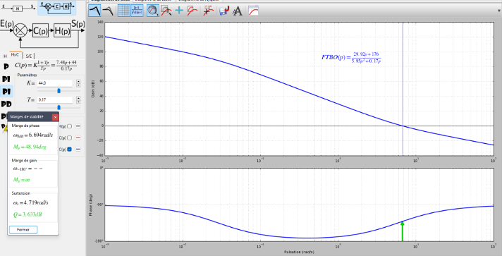
Figure insight (Fig.20) Design tool reports 66° phase margin (> target 45°) giving robustness to friction variability + vision latency (tens of ms). Infinite gain margin (no crossover) signals low risk of destabilising noise amplification.
Inner loop shields outer guidance from motor & voltage variation.
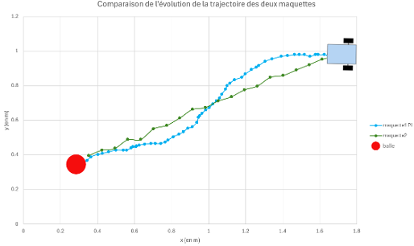
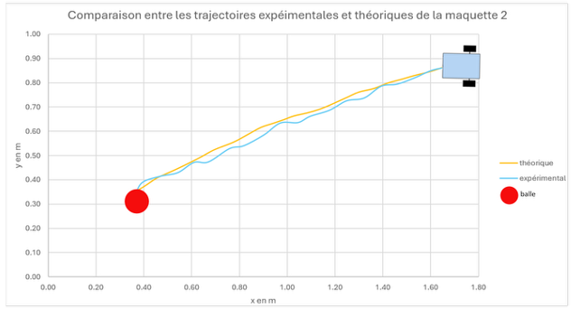
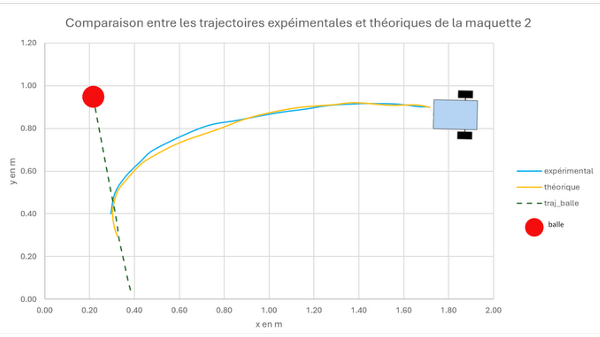
Figure insight (Fig.21–23) Prototype 2 both shortens capture time and eliminates terminal oscillation. Remaining model vs experiment gaps come mainly from perception latency + speed discretisation; qualitative dynamics (damping, low overshoot) match, validating the model → controller → hardware pipeline.
Bottleneck migrated: now vision frame rate & lighting noise, not actuation. Classic maturation signal.
| Stage | Model prediction | Reality | Gap | Action |
|---|---|---|---|---|
| P / servos | Faster, residual error | Oscillations ↑ | Servo asymmetry | Add integral |
| PI / servos | Error removed | Speed capped | Saturation | DC motors + encoders |
| PI / DC motors | Stable & faster | Confirmed | Vision noise | Plan perception upgrade |
// Encoder reading
int ticksG = readEncoderG();
int ticksD = readEncoderD();
// Speed computation
float omegaG = ticksG / T_sample;
float omegaD = ticksD / T_sample;
// Error
float eG = omegaG_ref - omegaG;
float eD = omegaD_ref - omegaD;
// PI control
uG += Kp * (eG - eG_prev) + Ki * eG * T_sample;
uD += Kp * (eD - eD_prev) + Ki * eD * T_sample;
// Saturation
uG = constrain(uG, 0, 255);
uD = constrain(uD, 0, 255);
// Apply PWM
analogWrite(motorG, uG);
analogWrite(motorD, uD);
// Save errors
eG_prev = eG;
eD_prev = eD;Instrumentation exposed persistent gain & dead‑zone asymmetry; moving to encoders + DC motors converted hidden bias into measurable states the controller can regulate.
Hook: steady‑state bias ≈ 0 cm; rare retunes.Recorded step data → least‑squares first‑order fit → analytical PI tuning meeting target margins before hardware deployment, avoiding trial‑and‑error gain hunts.
Hook: first hardware test matched 66° phase margin design.Perception latency & noise now dominate; roadmap: faster capture/processing, illumination normalization, optional lightweight depth to anticipate motion.
Hook: capture time reductions now vision‑bound.